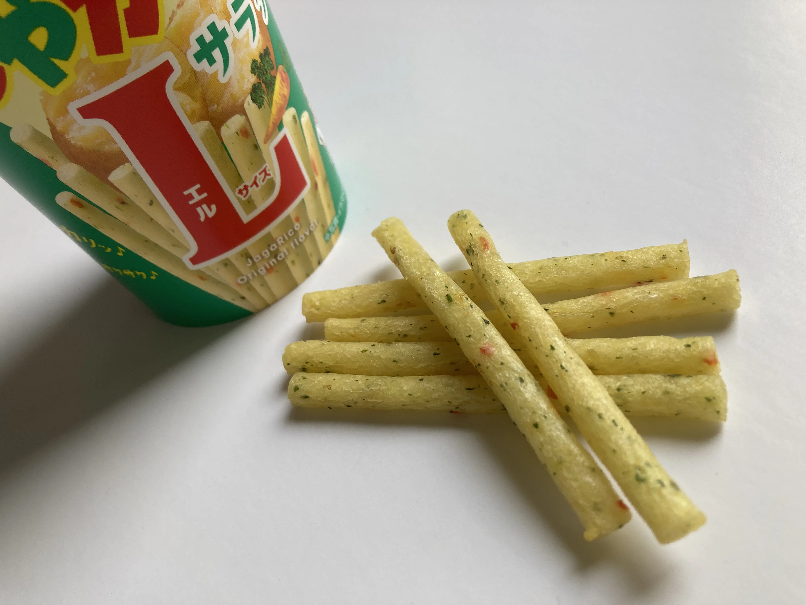

Jagariko Salad Flavor じゃがりこ サラダ

Salad flavor sounds like a diet snack, a concession to health. It is not; it is a full-bodied potato experience packed into a 150 yen cup, a crunch for millions across Japan.
The Signature Snap: Jagariko's Unforgettable Crunch
The immediate, undeniable draw of Calbee's Jagariko Salad Flavor is its texture, a sensation so distinct it stands alone in the world of potato snacks. That "crisp, hollow, and crunchy stick shape" with its "satisfying snap with every bite": the crunch and the stick form are Jagariko's defining feature. The crunch itself is fun to eat. This isn't the flat, brittle shatter of a standard potato chip like Lay's, nor the dense, starchy bite of a traditional French fry. Instead, it’s a firm yet airy crunch, unique in form. The stick-shaped potato pieces are specifically designed to be "lighter and less oily" than typical Western potato chips, and they possess a "more pronounced, airy crunch" compared to other stick varieties, even rivaling some savory crackers. This unique texture is central to Jagariko's wide appeal, creating a moment of focused sensation that offers a brief break from a busy day. The convenience of its cup format, readily available for around 150 yen at any Lawson, FamilyMart, 7-Eleven, or supermarket across Japan, ensures this distinctive crunch is always within effortless reach, making it a common convenience store snack.
"Salad" Explained: A Mild, Savory Flavor Profile
The "Salad" in Jagariko Salad Flavor often sparks initial curiosity and even confusion, but the taste swiftly clarifies its intriguing identity. The flavor profile is a careful balance: "savory, slightly salty, and subtly herbaceous." The 'salad' aspect translates to a "light, fresh, and slightly vegetal note," reminiscent more of a mild, well-rounded dressing than a strong, distinct vegetable taste. It’s a refreshing profile, avoiding the intensity and heavy seasoning often found in other packaged snacks. While some might find the flavor "a bit subtle" or "not 'vegetable-y' enough," especially if expecting a bolder, more overt vegetable presence, this gentle balance is precisely what makes it so appealing to its vast fanbase. The flavor has real depth. Clearly umami, clearly savory, but never heavy. Paired with that sharp crunch, it's the kind of snack you keep eating without getting tired of it. Good any time of day.
Your Daily Break: Jagariko's Place in Japanese Life
Jagariko fits into everyday life across Japan, whether for students studying late, office workers needing a 3 PM pick-me-up, or travelers seeking a familiar comfort. For students burning the midnight oil, whether cramming for exams or tackling complex projects, it's the familiar 150 yen cup, a quick, energizing break grabbed from a nearby convenience store. For office workers navigating spreadsheets and deadlines, it's the quiet indulgence reached for at 3 PM, a portable snack that delivers a refreshing savory note without leaving tell-tale greasy fingers on keyboards or documents. Jagariko is a snack that seemed perpetually available throughout childhood for countless individuals, making it a familiar, reassuring presence in their lives. The compact, sturdy cup makes it effortless to tuck into a bag for a long flight or a train commute, offering a familiar taste that brings a sense of calm amidst travel chaos and the unfamiliar. People find it the perfect companion for winding down after a long day, often paired with a cold beer for adults, a warm cup of green tea for a soothing moment, or even a glass of milk for a lighter, nostalgic touch. It’s more than just food; it’s a small, dependable part of daily life.
Jagariko in the Kitchen: A Surprising Crouton Substitute
Most people eat Jagariko Salad Flavor straight from its iconic cup. But there is one surprising use worth knowing. Crushed Jagariko sticks make a great substitute for croutons, sprinkled on top of salads or soups. The herbaceous note from the "salad" flavor matches leafy greens especially well, and the crunch holds up even after a light drizzle of dressing. A small handful of crushed Jagariko on a bowl of salad adds real texture and a light savory finish that most store-bought croutons cannot match. Soups work too, as long as you add it right before eating. One practical note: because of its biscuity texture, Jagariko can feel a bit dry if you eat it fast without a drink nearby. A cup of green tea or a cold beer alongside works well. And here's a small Calbee touch. The cup is cleverly sized so you cannot quite see how fast it empties. That's why it's gone before you notice.
For around 150 yen, it's an easy grab when you want something crunchy and lightly salty. If you see a cup at a konbini, give it a try. Your hand might just keep going back for more.